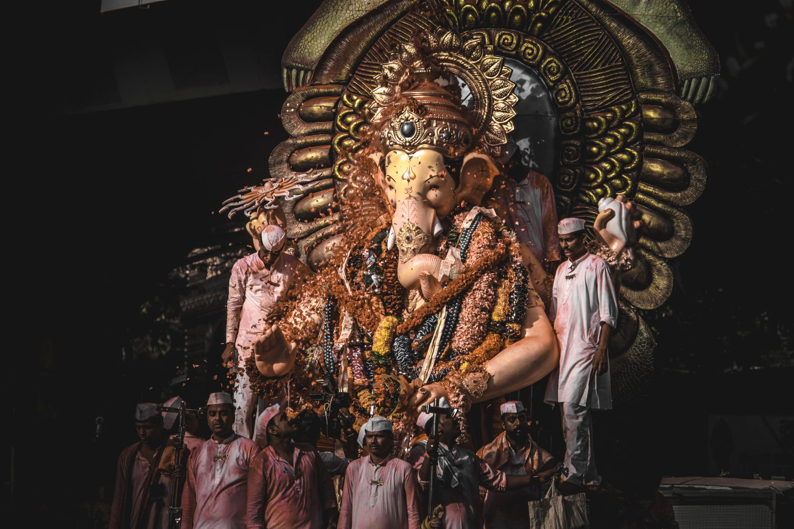
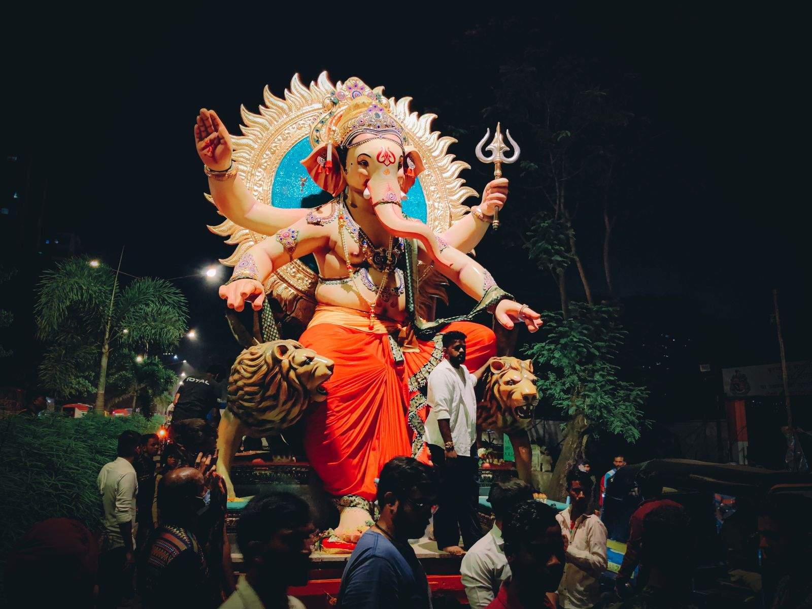
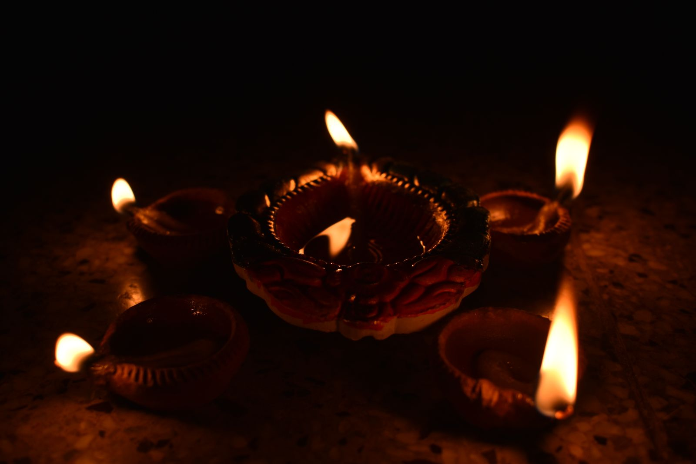
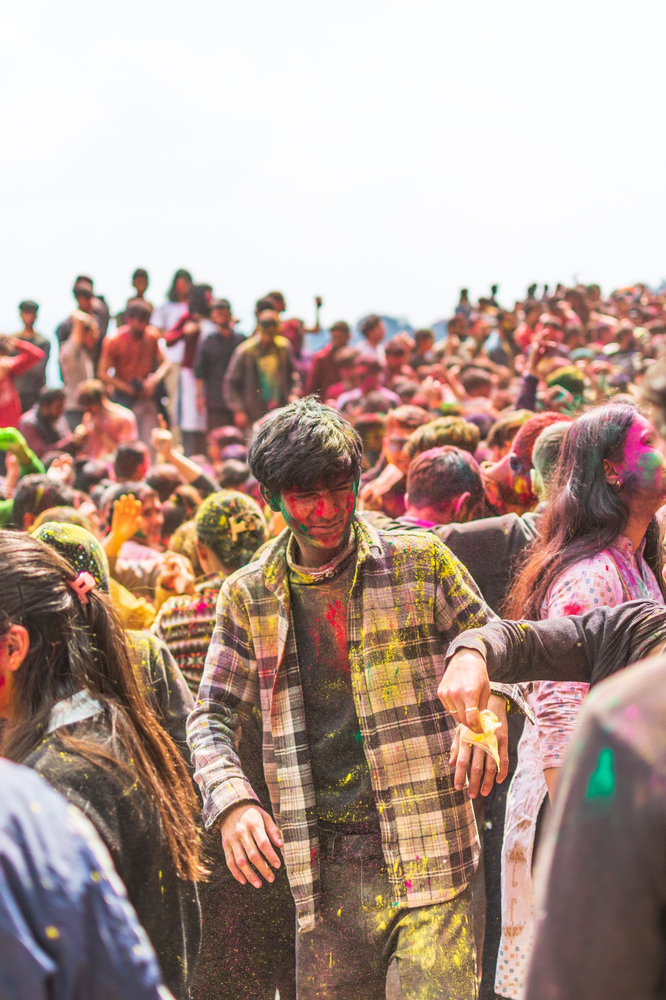
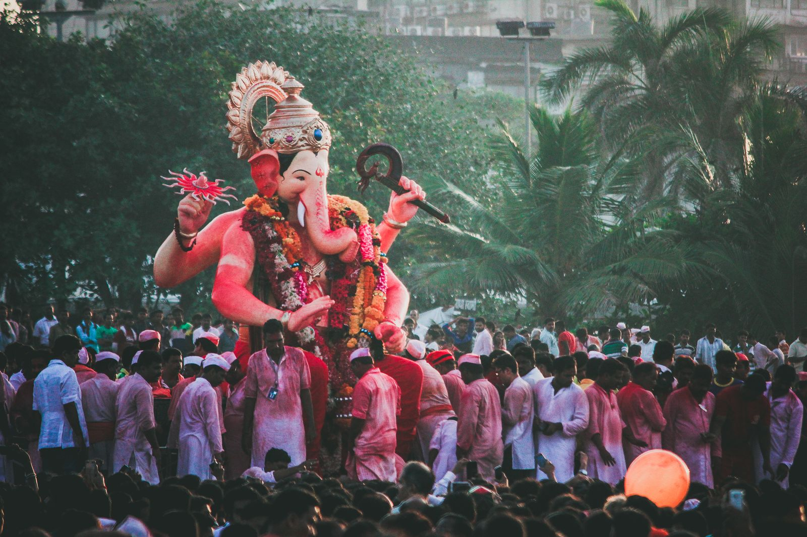

Pune · Ganesh Chaturthi first, every other festival after
The festival, kept on film.
I am Tara Iyer. For ten days every year this city belongs to Ganpati, and for ten years I have filmed it — the first aarti at dawn, the dhol-tasha pathaks, the visarjan crowds at the river. Families, housing societies and brands hire me to turn a festival into a film they will still be watching in twenty years. Everything on this page is a frame pulled from a film I actually delivered.





These are stills, not posters: each one is a single frame grabbed from a finished film, timecode included. No video plays on this page — a film is something I hand you, not something that chases you down a website.
What one festival day of filming really is
People book a “day of videography” imagining a person with a camera. Here is the honest shape of it, because the shape is what you are paying for.
10 hrs
Shot, not attended
A festival day is up to ten shooting hours — dawn aarti to the last procession. Two cameras do not halve that; they double the angles, so the aarti close-up and the crowd wide exist at the same second.
≈ 9 : 1
Shooting ratio
Roughly nine minutes are shot for every minute in your film. A 20-minute film is about three hours of footage, watched in full, twice, before a single cut is made. That watching is most of the edit days below.
2 mics
Sound is recorded, not added
The dhol-tasha, the aarti bells and your grandfather's shloka are recorded on location — a recorder at the musicians, a second at the family. Music in the finished film is either your family's own performance or a licensed track I clear in writing before delivery; I never ship a film with a song I had no right to use.
Rates, printed
Per festival day, by what you book. The planner underneath runs on exactly these figures — nothing is quoted one way here and charged another way later.
| Item | What it covers | Price |
|---|---|---|
| Festival day — one camera | Up to 10 shooting hours, Tara shooting, location sound kit | ₹28,000 / day |
| Festival day — two cameras | Same hours, plus second operator; aarti and crowd covered at once | ₹44,000 / day |
| 3-minute film | The short cut of the day — included in every booking | Included |
| 8-minute film | Replaces the included cut; full aarti sequence kept in | + ₹12,000 |
| 20-minute film | Replaces the included cut; the whole festival day, chaptered | + ₹26,000 |
| Vertical reel (60–90 sec) | First reel included; each further reel | ₹3,500 / reel |
| Photo set | 150 edited stills — frames pulled and shot alongside, per booking | ₹9,000 |
| Shooting hours | One festival day, either camera package | 10 hrs |
| Booking cut-off | Bookings close before the first festival day | 21 days |
Shoot planner
Tell it the shape of your festival. It works from the rate card above and the booked-dates list below — if your date is gone, it says so here, not after you have filled a form.
Your shoot, on paper
—Shooting hours on location
—Edit days after the last day
—Film delivered by
—Total at the printed rates
See three films told in full
A home Ganpati across ten days, a housing society's Diwali, and a sweet-shop chain's Holi campaign — what each client asked for, what was shot, what they got and when. The films page.
My one strong opinion
I will not fly a drone over a visarjan crowd. A drone above ten thousand wet, dancing people is a falling object waiting for its moment, and no shot is worth it. I shoot the procession from a rooftop or a balcony arranged in advance — the frame is better anyway, because it has a person in it.